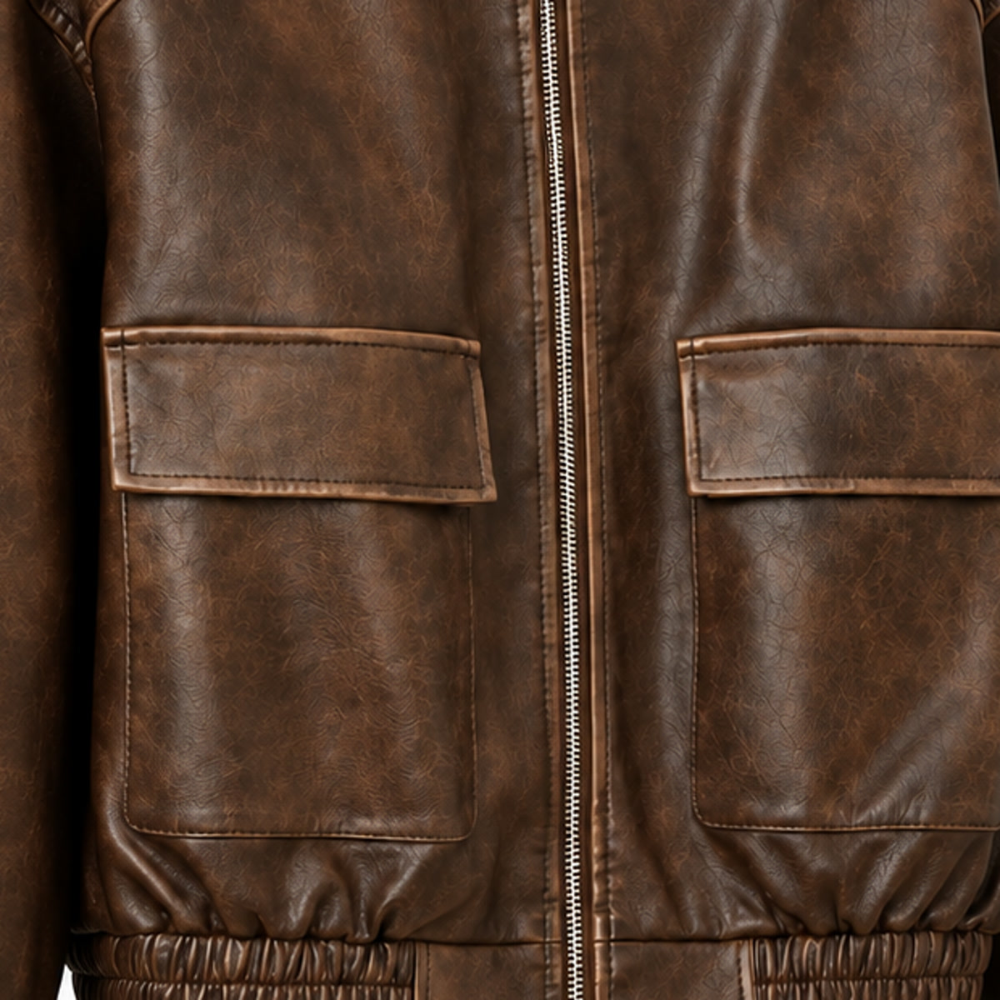

VANTOR is inspired by the spirit of moving forward, drawn from the idea of avant and strengthened by a bold, decisive edge.
Crafted for those who refuse to blend in.
More than a jacket. A state of mind.
You put it on.
Genuine leather. Heavy hand. No plastic shine.
One V, on the snap. That is the whole logo.
Eleven jackets. One mark. Made responsibly.
01 / The range
Every one of them is lined, finished with the same mark, and cut to be worn hard.
02 / The make
Four things a good jacket does that a cheap one cannot. Check ours against all four.
Real hide repeats nothing. Hold two panels side by side and they will not match.
A drop sinks in and darkens. On plastic it sits there and beads.
You feel it on your shoulders the first time you put it on. That is the point.
There is no substitute for this one and everybody knows it.

03
VANTOR is inspired by the spirit of moving forward, drawn from the idea of avant and strengthened by a bold, decisive edge.
Crafted for those who refuse to blend in.
More than a jacket. A state of mind.
04 / The arrival
Foiled box, tissue, a card. Nothing plastic in the whole package.
05 / Fit
Every jacket here is cut oversized on purpose, so take your normal size unless you want it roomier still.
06
Genuine leather, with a polyester lining. The care tag on every jacket says so, and so does the grain.
Cheap bonded leather cracks because it is ground up scrap held together with glue. This is hide. Keep it out of direct heat, clean it professionally, and it outlives the trend that sold it to you.
Yes. The first few wears are the stiffest it will ever be, and it moulds to your shoulders from there.
Tell us and we sort it out. No restocking fee.
Hide, hardware and lining, in that order. Nothing here is decoration.
07
Tell us which one caught your eye and we will come back to you.
Got it. We will come back to you shortly.